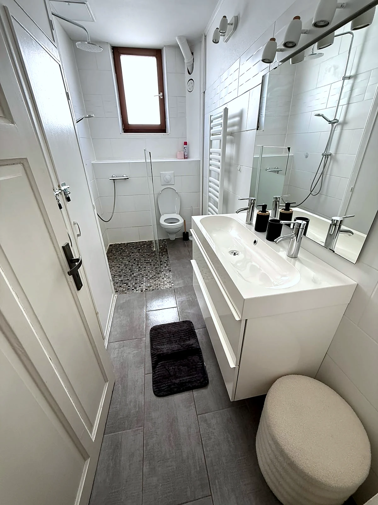
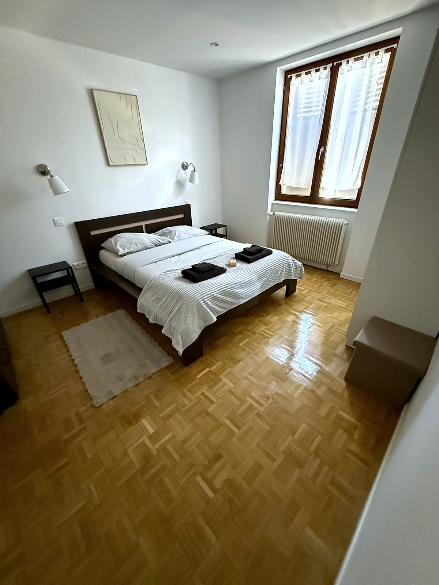

Nos services de ménage Airbnb à Strasbourg
Ménage Airbnb, remise à blanc, linge et contrôle qualité pour locations courte durée à Strasbourg. Un service pensé pour les rotations rapides et les avis voyageurs.
Trois prestations pour sécuriser vos rotations
Chaque intervention est cadrée selon le logement, le délai entre voyageurs et le niveau de suivi attendu.
Ménage entre voyageurs et remise à blanc
Nettoyage complet entre séjours, désinfection des points de contact, mise en ordre du logement et attention aux détails visibles par les voyageurs. Notre méthode suit une checklist de ménage entre deux voyageurs éprouvée.
Gestion du linge sur demande
Collecte, lavage, séchage, repassage et mise en place selon volume, fréquence de rotation et organisation définie avec le propriétaire ou la conciergerie.
Contrôle qualité et signalement
Retour WhatsApp après passage, photos selon la formule choisie, et signalement des dommages, consommables manquants ou besoins de maintenance constatés.
Pages dédiées à nos services
Trois pages détaillent précisément notre positionnement de prestataire ménage, sans confusion avec une conciergerie complète.
Ménage Airbnb Strasbourg
Remise à blanc entre voyageurs, gestion du linge, contrôle qualité et rapport photo pour propriétaires Airbnb.
Consulter la page arrow_forwardNettoyage location courte durée Strasbourg
Nettoyage professionnel pour Airbnb, Booking, Abritel, meublés touristiques et appartements saisonniers.
Consulter la page arrow_forwardMénage villas de luxe Strasbourg
Remise à blanc minutieuse, linge hôtelier et discrétion pour villas et biens d'exception loués en courte durée.
Consulter la page arrow_forwardNos interventions en situation réelle




Un service pensé pour les exigences de la location courte durée
Notre organisation terrain réduit la charge quotidienne liée aux rotations. Vous gardez la relation client, nous prenons en charge le nettoyage, le linge et les retours utiles après intervention. Nos tarifs de ménage Airbnb sont publiés en toute transparence.
- verifiedMéthode adaptée aux standards attendus en location courte durée
- scheduleDisponibilité 7j/7 selon planning, zone et volume de rotations
- photo_cameraRapport photo WhatsApp selon la formule choisie

Tout savoir sur nos interventions
Les réponses aux questions que se posent nos clients propriétaires et conciergeries.
Dans quelles zones intervenez-vous ? add
Travaillez-vous le week-end ? add
Collaborez-vous avec des conciergeries ? add
Quels sont les détails de vos prestations de nettoyage ? add
Êtes-vous assurée en responsabilité civile professionnelle ? add
Proposez-vous un contrat ou un engagement écrit ? add
Comment gérez-vous les enchaînements serrés entre deux voyageurs ? add
Comment sont fixés vos tarifs ? add
Gérez-vous le linge avec du matériel professionnel ? add
Quel suivi offrez-vous après intervention ? add
Gérez-vous les urgences de dernière minute ? add
Comment obtenir un devis personnalisé ? add
Que comprend exactement la remise à blanc entre deux voyageurs ? add
Combien de temps dure une intervention entre deux séjours ? add
Comment accédez-vous au logement en mon absence ? add
Que se passe-t-il si un problème est constaté lors du passage ? add
En quoi votre service est-il différent d’un ménage classique à domicile ? add
Ce que les clients retiennent
Nous tenons à exprimer notre entière satisfaction concernant son intervention. Tout a été exécuté de manière impeccable, et nous le recommandons vivement.
La qualité du ménage est irréprochable, les délais sont toujours respectés et la communication est fluide. Un partenaire de confiance indispensable pour la gestion de nos biens.
Notre collaboration se passe très bien, elle est à l’écoute des demandes de nos clients et s’adapte à toutes les situations. Je la recommande.